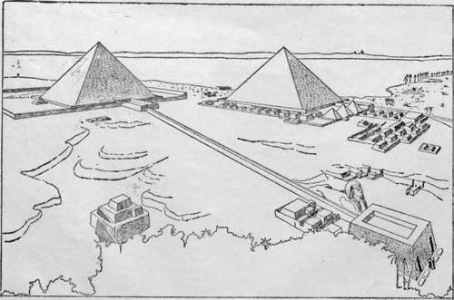

Introductory
Description
This section is from the book "The Pyramids Of Giza", by Annie Abernethie Pirie Quibell. Also available from Amazon: The Pyramids of Giza.
Introductory
Everyone who comes to Egypt has heard of the pyramids, but comparatively few know more about them than that they are tall and pointed, and, in a vague way, that they are very old. Some people have an idea that they were the buildings that the Children of Israel built for Pharaoh under the lash of Egyptian overseers, and it surprises many when they come to realise that the pyramids had been standing for more than a thousand years before the Children of Israel ever saw Egypt. Truly the pyramids are worth seeing beyond most sights that men travel far to see ; they are the oldest structures of stone in all the world and they are among the great things which cannot be hackneyed or belittled by the crowds that go to look at them : electric trams and picnic parties round about their base may seem incongruous and vulgar, but let us move but a few yards away into the solitude of the desert and we cannot but feel the solemn majesty of these mighty tombs which have looked down on so many generations of mankind.
For they are tombs, the greatest tombs in the world ; tombs of kings who believed themselves gods and, nearly 5000 years ago, prepared for themselves a resting place that they thought fitting for them. Great kings and wealthy they must have been to have possessed such vast sums as the Pyramids must have cost. How did they get their wealth ? Why are their tombs here at Giza ? Why did they want to build such tombs at all ?
It will help us to answer these questions if we take our stand on the pyramid plateau and look out over the land of Egypt. Northwards there is the Delta, a wide, rich plain; to the south there is a narrow, ribbon-like strip of valley which continues right along the Nile up to the Sudan, with the desert always close by on either side. In the oldest times of which there is any record, there were two different countries, the north land and the south land, with independent rulers ; but, about 3500 B.C. they were united under Menes or Mena, who was the first king of all Egypt and who built a town at the junction of the two lands to be a capital for the whole country. The name of this town was Memphis and it lay along the Nile for some miles between the sites of the modern villages of Giza and Bedrashein. Now, as the Egyptians, ancient and modern, always bury on the desert whenever it is practicable—and it is always practicable in Upper Egypt because the cultivated part is so narrow—we should expect to find a big cemetery on the desert near any place where there has been a big town, and where there was a great capital we should naturally look for a very large and rich burying ground. And accordingly the Memphis cemetery stretches all along the desert from Abu Roash in the north to Dahshur in the south, and it is full of graves of every degree, for everybody, rich and poor, who died in Memphis for something like 4000 years was buried there.
1st And 2nd Pyramids And Sphinx After Holschers Reconstruction.
The soil of Egypt is very rich and needs only some mechanical skill to regulate the irrigation, for it to produce abundantly. By the time of Menes there was not only an irrigation system but power vested in the king and in the great landowners to call out labour as required, so we may be sure that a wealthy man in those days had plenty of good things in his house. His estate provided meat, bread, vegetables, wine and beer ; linen was spun and pottery made by his servants and retainers ; besides that, gold, copper and precious stones were imported from the Sudan, from Sinai, and perhaps even from Cyprus and Syria, so he certainly had around him beautiful vases, jewellery and embroideries, but the house itself was only built of brick, plastered indeed and decorated, but not made to last. Why then did he make his grave so solid and so expensive ?
It is scarcely possible for modern mankind to enter sufficiently into the minds of their primitive forefathers to be able to explain their religious ideas, but one thing which stands out very clearly in the case of the ancient Egyptians is their belief in a continued existence after death.
It was hardly immortality, or rather it was a very limited immortality, fey* all depended on the preservation of the body from decay, and the measures necessary were so expensive and so complicated that they were probably not within reach of any but the rich. These ideas developed and altered greatly as time went on, but in the early days of which we are now speaking, it seems that there was little chance ior a poor man to exist in the next world at all unless, perhaps, he could still survive there as an attendant to his master.
The Egyptians could not conceive the spiritual part of an individual existing without a bodily tenement to contain it, and the strangest thing—as it seems to us—is their belief that the body must be treated as if it still had needs and must be supplied with food and drink. But by the aid of a magical ritual this could be done.
Firstly, the preservation of the body was attended to by embalmment or mummification—as it is more usually called— then, as fine and strong a coffin was provided as the available resources could afford, then it was lowered down a shaft into a chamber hewn out of the rock, the chamber was walled up, the shaft filled in and then the question came as to how the necessary nourishment was to be provided. A house was built above the funeral vault and in it, or in front of it, was a chapel where worshippers could come with offerings of food, flowers, perfumes, "and all good and pure things". These were laid down before a sort of niche in the chapel wall, shaped like a door and inscribed with magic texts which should make it possible for the spiritual part of the dead man, which still existed, the "Ka" as it was called, to come through this imitation doorway and partake of the offerings wThich had ibeen placed there for him.
Continue to: